Suppose that we observe a quantitative response \(Y\) and \(p\) different predictors, \(X_1, X_2, \ldots , X_p\). We assume that there is some relationship between \(Y\) and \(X = (X_1, X_2, \ldots, Xp)\), which can be written in the very general form
\[
Y = f(X) + \epsilon
\]
Here \(f\) is some fixed but unknown function of \(X_1, \ldots , X_p\), and \(\epsilon\) is a random error term, which is independent of \(X\) and has mean zero. In this formulation, \(f\) represents the systematic information that \(X\) provides about \(Y\).
In essence, statistical learning refers to a set of approaches for estimating \(f\).
Why estimate \(f\)?
There are two main reasons that we may wish to estimate \(f\): prediction and inference.
Prediction
In many situations, a set of inputs \(X\) are readily available, but the output \(Y\) cannot be easily obtained. In this setting, since the error term averages to zero, we can predict \(Y\) using
\[
\hat{Y} = \hat{f}(X),
\]
where \(\hat{f}\) represents our estimate for \(f\) , and \(\hat{Y}\) represents the resulting prediction for \(Y\). In this setting, \(\hat{f}\) is often treated as a black box, in the sense that one is not typically concerned with the exact form of \(\hat{f}\), provided that it yields accurate predictions for \(Y\).
The accuracy of \(\hat{Y}\) as a prediction for \(Y\) depends on two quantities, which we will call the reducible error and the irreducible error. In general, \(\hat{f}\) will not be a perfect estimate for \(f\), and this inaccuracy will introduce some error. This error is reducible because we can potentially improve the accuracy of \(\hat{f}\) by using the most appropriate statistical learning technique to estimate \(f\). However, even if it were possible to form a perfect estimate for \(f\), so that our estimated response took the form \(\hat{Y} = f(X)\), our prediction would still have some error in it! This is because \(Y\) is also a function of \(\epsilon\), which, by definition, cannot be predicted using \(X\). Therefore, variability associated with \(\epsilon\) also affects the accuracy of our predictions. This is known as the irreducible error, because no matter how well we estimate \(f\), we cannot reduce the error introduced by \(\epsilon\).
Why is the irreducible error larger than zero? The quantity \(\epsilon\) may contain unmeasured variables that are useful in predicting \(Y\): since we don’t measure them, \(f\) cannot use them for its prediction. The quantity \(\epsilon\) may also contain unmeasurable variation.
Consider a given estimate \(\hat{f}\) and a set of predictors \(X\), which yields the prediction \(\hat{Y} = \hat{f}(X)\). Assume for a moment that both \(\hat{f}\) and \(X\) are fixed, so that the only variability comes from \(\epsilon\). Then, we can say:
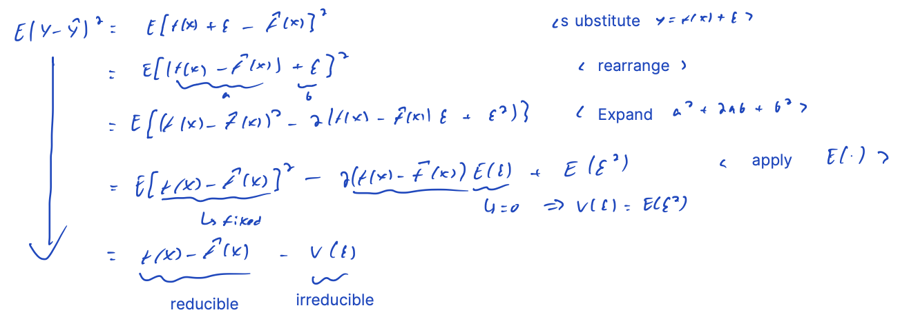
where \(E(Y − \hat{Y})^2\) represents the average, or expected value, of the squared difference between the predicted and actual value of \(Y\), and \(Var(\epsilon)\) represents the variance associated with the error term \(\epsilon\).
The focus of this book is on techniques for estimating \(f\) with the aim of minimizing the reducible error. It is important to keep in mind that the irreducible error will always provide an upper bound on the accuracy of our prediction for \(Y\). This bound is almost always unknown in practice.
Inference
We are often interested in understanding the association between \(Y\) and \(X_1, \ldots , X_p\). In this situation we wish to estimate \(f\), but our goal is not necessarily to make predictions for \(Y\). Now \(\hat{f}\) cannot be treated as a black box, because we need to know its exact form. In this setting, one may be interested in answering the following questions:
Which predictors are associated with the response? It is often the case that only a small fraction of the available predictors are substantially associated with \(Y\). Identifying the few important predictors among a large set of possible variables can be extremely useful, depending on the application.
What is the relationship between the response and each predictor? Some predictors may have a positive relationship with \(Y\), in the sense that larger values of the predictor are associated with larger values of \(Y\). Other predictors may have the opposite relationship. Depending on the complexity of \(f\), the relationship between the response and a given predictor may also depend on the values of the other predictors.
Can the relationship between \(Y\) and each predictor be adequately summarized using a linear equation, or is the relationship more complicated? Historically, most methods for estimating \(f\) have taken a linear form. In some situations, such an assumption is reasonable or even desirable. But often the true relationship is more complicated, in which case a linear model may not provide an accurate representation of the relationship between the input and output variables.
How do we estimate \(f\)?
Throughout this book, we explore many linear and non-linear approaches for estimating \(f\). However, these methods generally share certain characteristics. Here is an overview.
Note we will always assume that we have observed a set of \(n\) different data points, called the training data because we will use these observations to train, or teach, our method how to estimate \(f\).
Our goal is to apply a statistical learning method to the training data in order to estimate the unknown function \(f\). In other words, we want to find a function \(\hat{f}\) such that \(Y \approx \hat{f}(X)\) for any observation \((X,Y)\). Broadly speaking, most statistical learning methods for this task can be characterized as either parametric or non-parametric. We now briefly discuss these two types of approaches.
Parametric
Parametric methods involve a two-step model-based approach.
Step 1
First, we make an assumption about the functional form, or shape, of \(f\). For example, one very simple assumption is that \(f\) is linear in \(X\):
This is a linear model. Once we have assumed that \(f\) is linear, the problem of estimating \(f\) is greatly simplified. Instead of having to estimate an entirely arbitrary \(p\)-dimensional function \(f(X)\), one only needs to estimate the p+1 coefficients \(\beta_0, \beta_1, \ldots, \beta_p\).
Step 2
After a model has been selected, we need a procedure that uses the training data to fit or train the model. In the case of the linear model, we need to estimate the parameters \(\beta_0, \beta_1, \ldots, \beta_p\).That is,we want to find values of these parameters such that
The most common approach to fitting the model above is referred to as (ordinary) least squares. However, least squares is one of many possible ways to fit the linear model.
The model-based approach just described is referred to as parametric; it reduces the problem of estimating \(f\) down to one of estimating a set of parameters. Assuming a parametric form for \(f\) simplifies the problem of estimating \(f\) because it is generally much easier to estimate a set of parameters, such as \(\beta_0, \beta_1, \ldots, \beta_p\) in the linear model, than it is to fit an entirely arbitrary function \(f\). The potential disadvantage of a parametric approach is that the model we choose will usually not match the true unknown form of \(f\). If the chosen model is too far from the true \(f\), then our estimate will be poor. We can try to address this problem by choosing flexible models that can fit many different possible functional forms for \(f\). But in general, fitting a more flexible model requires estimating a greater number of parameters. These more complex models can lead to a phenomenon known as overfitting the data, which essentially means they follow the errors, or noise, too closely.
Non-parametric
Non-parametric methods do not make explicit assumptions about the functional form of \(f\). Instead they seek an estimate of \(f\) that gets as close to the data points as possible without being too rough or wiggly. Such approaches can have a major advantage over parametric approaches: by avoiding the assumption of a particular functional form for \(f\), they have the potential to accurately fit a wider range of possible shapes for \(f\).
Any parametric approach brings with it the possibility that the functional form used to estimate \(f\) is very different from the true \(f\), in which case the resulting model will not fit the data well. In contrast, non-parametric approaches completely avoid this danger, since essentially no assumption about the form of \(f\) is made. But non-parametric approaches do suffer from a major disadvantage: since they do not reduce the problem of estimating \(f\) to a small number of parameters, a very large number of observations (far more than is typically needed for a parametric approach) is required in order to obtain an accurate estimate for \(f\).
Be careful of overfitting though, non-parametric methods can fit the data perfectly if complex enough, which causes the fit obtained to not yield accurate estimates of the response on new observations that were not part of the original training data set.
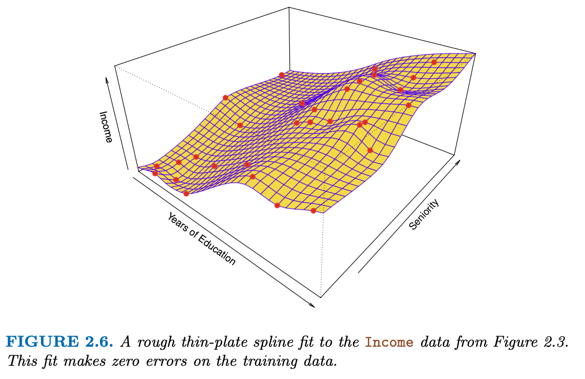
The trade-off between prediction accuracy and model interpretability
Of the many methods that we examine in this book, some are less flexible, or more restrictive, in the sense that they can produce just a relatively small range of shapes to estimate \(f\). For example, linear regression is a relatively inflexible approach, because it can only generate linear functions (smooth lines / planes). Other methods are considerably more flexible because they can generate a much wider range of possible shapes to estimate \(f\).
One might reasonably ask the following question: why would we ever choose to use a more restrictive method instead of a very flexible approach? There are several reasons that we might prefer a more restrictive model. If we are mainly interested in inference, then restrictive models are much more interpretable. For instance, when inference is the goal, the linear model may be a good choice since it will be quite easy to understand the relationship between \(Y\) and \(X_1, X_2, \ldots, X_p\). In contrast, very flexible approaches, such as the splines and boosting methods can lead to such complicated estimates of \(f\) that it is difficult to understand how any individual predictor is associated with the response.
Here is an illustration of the trade-off between flexibility and interpretability for some of the methods that we cover in this book.
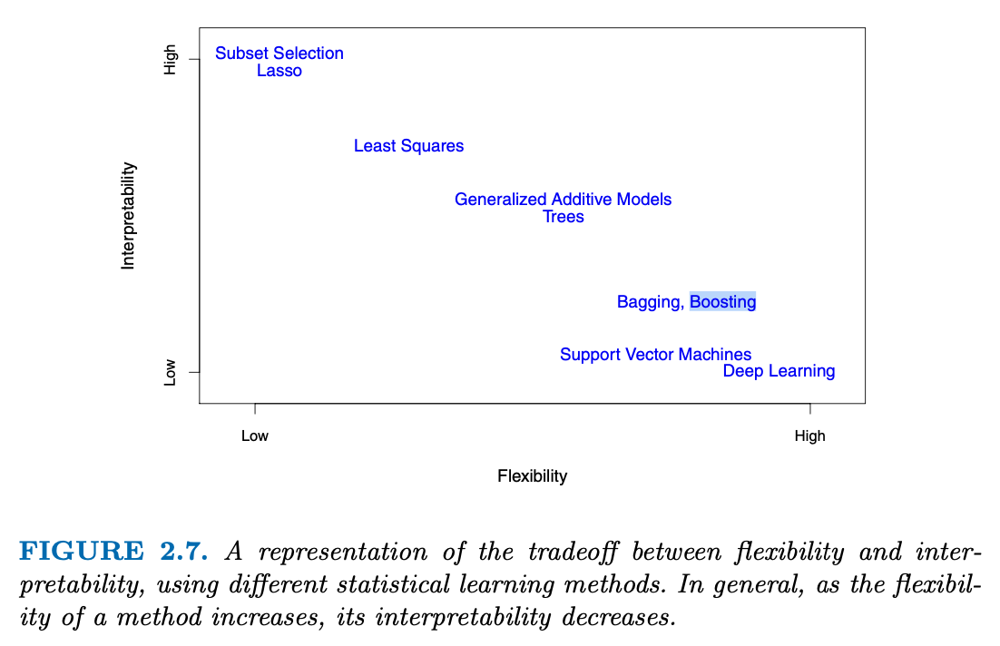
Least squares linear regression is relatively inflexible but is quite interpretable. The lasso relies upon the linear model but uses an alternative fitting procedure for estimating the coefficients \(\beta_0, \beta_1, \ldots, \beta_p\). The new procedure is more restrictive in estimating the coefficients, and sets a number of them to exactly zero. Hence in this sense the lasso is a less flexible approach than linear regression. It is also more interpretable than linear regression, because in the final model the response variable will only be related to a small subset of the predictors — namely, those with nonzero coefficient estimates.
Generalized additive models (GAMs), discussed in Chapter 7, instead extend the linear model to allow for certain non-linear relationships. Consequently, GAMs are more flexible than linear regression. They are also somewhat less interpretable than linear regression, because the relationship between each predictor and the response is now modeled using a curve. Finally, fully non-linear methods such as bagging, boosting, support vector machines with non-linear kernels, and neural networks (deep learning) are highly flexible approaches that are harder to interpret.
We have established that when inference is the goal, there are clear advantages to using simple and relatively inflexible statistical learning methods. In some settings, however, we are only interested in prediction, and the interpretability of the predictive model is simply not of interest; our sole requirement for the algorithm is that it predict accurately (i.e. interpretability is not a concern). In this setting, we might expect that it will be best to use the most flexible model available. Surprisingly, this is not always the case! We will often obtain more accurate predictions using a less flexible method. This phenomenon, which may seem counterintuitive at first glance, has to do with the potential for overfitting in highly flexible methods.
Supervised vs unsupervised learning
Most statistical learning problems fall in to one of two categories: supervised or unsupervised. The examples that we have discussed so far in this chapter all fall into the supervised learning domain. For each observation of the predictor measurement(s) \(x_i, i = 1, \ldots , n\) there is an associated response measurement \(y_i\). We wish to fit a model that relates the response to the predictors, with the aim of accurately predicting the response for future observations (prediction) or better understanding the relationship between the response and the predictors (inference). Many classical statistical learning methods such as linear regression and logistic regression, as well as more modern approaches such as GAM, boosting, and support vector machines, operate in the supervised learning domain. The vast majority of this book is devoted to this setting.
By contrast, unsupervised learning describes the somewhat more challenging situation in which for every observation \(i = 1, \ldots, n\), we observe a vector of measurements \(x_i\) but no associated response \(y_i\). It is not possible to fit a linear regression model, since there is no response variable to predict. In this setting, we are in some sense working blind; the situation is referred to as unsupervised because we lack a response variable that can supervise our analysis. What sort of statistical analysis is possible? We can seek to understand the relationships between the variables or between the observations. One statistical learning tool that we may use in this setting is cluster analysis, or clustering. The goal of cluster analysis is to ascertain, on the basis of \(x_1, \ldots, x_n\), whether the observations fall into relatively distinct groups.
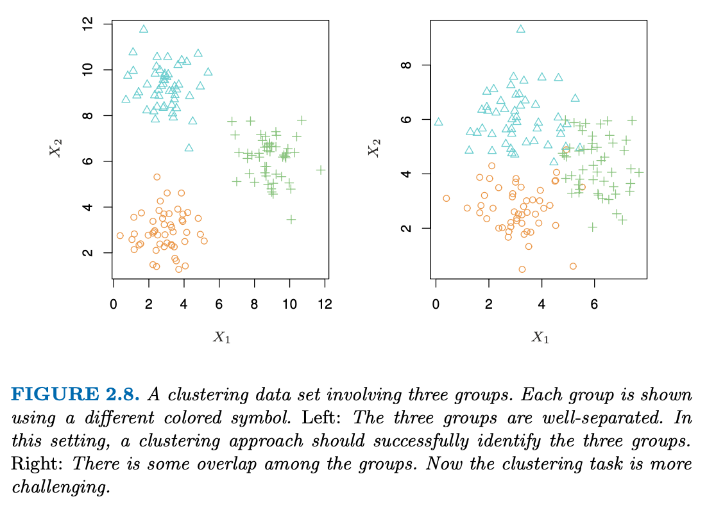
However, in practice the group memberships are unknown, and the goal is to determine the group to which each observation belongs. A clustering method could not be expected to assign all of the overlapping points to their correct group.
In the example above, there are only two variables, and so one can simply visually inspect the scatterplots of the observations in order to identify clusters. However, in practice, we often encounter data sets that contain many more than two variables. In this case, we cannot easily plot the observations. For instance, if there are \(p\) variables in our data set, then \(p(p − 1)/2\) distinct scatterplots can be made, and visual inspection is simply not a viable way to identify clusters. For this reason, automated clustering methods are important.
Many problems fall naturally into the supervised or unsupervised learning paradigms. However, sometimes the question of whether an analysis should be considered supervised or unsupervised is less clear-cut. For instance, suppose that we have a set of \(n\) observations. For \(m\) of the observations, where \(m < n\), we have both predictor measurements and a response measurement. For the remaining \(n − m\) observations, we have predictor measurements but no response measurement. Such a scenario can arise if the predictors can be measured relatively cheaply but the corresponding responses are much more expensive to collect. We refer to this setting as a semi-supervised learning problem. In this setting, we wish to use a statistical learning method that can incorporate the \(m\) observations for which response measurements are available as well as the \(n − m\) observations for which they are not. Although this is an interesting topic, it is beyond the scope of this book.
Regression vs classification problems
We tend to refer to problems with a quantitative response as regression problems, while those involving a qualitative response are often referred to as classification problems. However, the distinction is not always that crisp. Least squares linear regression is used with a quantitative response, whereas logistic regression is typically used with a qualitative (two-class, or binary) response. Thus, despite its name, logistic regression is a classification method. But since it estimates class probabilities, it can be thought of as a regression method as well. Some statistical methods, such as \(K\)-nearest neighbors and boosting, can be used in the case of either quantitative or qualitative responses.
We tend to select statistical learning methods on the basis of whether the response is quantitative or qualitative; i.e. we might use linear regression when quantitative and logistic regression when qualitative. However, whether the predictors are qualitative or quantitative is generally considered less important. Most of the statistical learning methods discussed in this book can be applied regardless of the predictor variable type, provided that any qualitative predictors are properly coded before the analysis is performed.
3.1.2 Assessing model accuracy
One of the key aims of this book is to introduce the reader to a wide range of statistical learning methods that extend far beyond the standard linear regression approach. Why is it necessary to introduce so many different statistical learning approaches, rather than just a single best method? There is no free lunch in statistics:no one method dominates all others over all possible data sets. On a particular data set, one specific method may work best, but some other method may work better on a similar but different data set. Hence it is an important task to decide for any given set of data which method produces the best results. Selecting the best approach can be one of the most challenging parts of performing statistical learning in practice.
Now, we discuss some of the most important concepts that arise in selecting a statistical learning procedure for a specific data set.
Measuring the quality of fit
In order to evaluate the performance of a statistical learning method on a given data set, we need some way to measure how well its predictions actually match the observed data. That is, we need to quantify the extent to which the predicted response value for a given observation is close to the true response value for that observation. In the regression setting, the most commonly-used measure is the mean squared error (MSE), given by
\[
MSE = \frac{1}{n} \sum_{i = 1}^n (y_i - \hat{f}(x_i))^2
\] The MSE will be small if the predicted responses are very close to the true responses, and will be large if for some of the observations, the predicted and true responses differ substantially.
This MSE is computed using the training data that was used to fit the model, and so should more accurately be referred to as the training MSE. But in general, we do not really care how well the method works training on the training data. Rather, we are interested in the accuracy of the predictions that we obtain when we apply our method to previously unseen test data. To state it more mathematically, suppose that we fit our statistical learn- ing method on our training observations \(\{(x_1,y_1), (x_2,y_2), \ldots, (x_n,y_n)\}\), and we obtain the estimate \(\hat{f}\). We can then compute \(\hat{f}(x_1), \hat{f}(x_2), \ldots , \hat{f}(x_n)\). If these are approximately equal to \(y_1, y_2, \ldots, y_n\), then the training MSE is small. However, we are really not interested in whether \(\hat{f}(x_i) \approx y_i\); instead, we want to know whether \(\hat{f}(x_0)\) is approximately equal to \(y_0\), where \((x_0,y_0)\) is a previously unseen test observation not used to train the statistical learning method. We want to choose the method that gives the lowest test MSE, as opposed to the lowest training MSE. In other words, if we had a large number of test observations, we could compute the average squared prediction error for these test observations \((x_0,y_0)\):
\[
\text{Ave}(y_0 - \hat{f}(x_0))^2
\]
We’d like to select the model for which this quantity is as small as possible.
How can we go about trying to select a method that minimizes the test MSE? In some settings, we may have a test data set available. We can then simply evaluate the above formula on the test observations, and select the learning method for which the test MSE is smallest. But what if no test observations are available? In that case, one might imagine simply selecting a statistical learning method that minimizes the training MSE. This seems like it might be a sensible approach, since the training MSE and the test MSE appear to be closely related. Unfortunately, there is a fundamental problem with this strategy: there is no guarantee that the method with the lowest training MSE will also have the lowest test MSE. Roughly speaking, the problem is that many statistical methods specifically estimate coefficients so as to minimize the training set MSE. For these methods, the training set MSE can be quite small, but the test MSE is often much larger.
The figure below illustrates this concept. In the left-hand panel, we have generated observations from some \(f(X)\) with the true \(f\) given by the black curve. The orange, blue and green curves illustrate three possible estimates for \(f\) obtained using methods with increasing levels of flexibility.
The blue and green curves were produced using smoothing splines. It is clear that as the level of flexibility increases, the curves fit the observed data more closely. The green curve is the most flexible and matches the data very well; however, we observe that it fits the true \(f\) (shown in black) poorly because it is too wiggly.
On the right panel, the grey curve displays the average training MSE as a function of flexibility, or more formally the degrees of freedom, for a number of smoothing splines. The degrees of freedom is a quantity that summarizes the flexibility of a curve. A more restricted and hence smoother curve has fewer degrees of freedom than a wiggly curve (i.e. more error dfs; a more restricted and hence smoother curve has fewer degrees of freedom than a wiggly curve). The training MSE declines monotonically as flexibility increases. In this example the true \(f\) is non-linear, and so the orange linear fit is not flexible enough to estimate f well. The green curve has the lowest training MSE of all three methods, since it corresponds to the most flexible of the three curves fit in the left-hand panel.
In this example, we know the true function \(f\), and so we can also compute the test MSE over a very large test set, as a function of flexibility. (Of course, in general \(f\) is unknown, so this will not be possible. The horizontal dashed line indicates \(\text{Var}(\epsilon)\), the irreducible error, which corresponds to the lowest achievable test MSE among all possible methods. As the flexibility of the statistical learning method increases, we observe a monotone decrease in the training MSE and a U-shape in the test MSE (red line). This is a fundamental property of statistical learning that holds regardless of the particular data set at hand and regardless of the statistical method being used. As model flexibility increases, training MSE will decrease, but the test MSE may not. When a given method yields a small training MSE but a large test MSE, we are said to be overfitting the data. This happens because our statistical learning procedure is working too hard to find patterns in the training data, and may be picking up some patterns that are just caused by random chance rather than by true properties of the unknown function \(f\). When we overfit the training data, the test MSE will be very large because the supposed patterns that the method found in the training data simply don’t exist in the test data. Note that regardless of whether or not overfitting has occurred, we almost always expect the training MSE to be smaller than the test MSE because most statistical learning methods either directly or indirectly seek to minimize the training MSE. Overfitting refers specifically to the case in which a less flexible model would have yielded a smaller test MSE.
Here is another example that displays the same patterns. However, because the truth is close to linear, the test MSE only decreases slightly before increasing again, so that the orange least squares fit is substantially better than the highly flexible green curve.
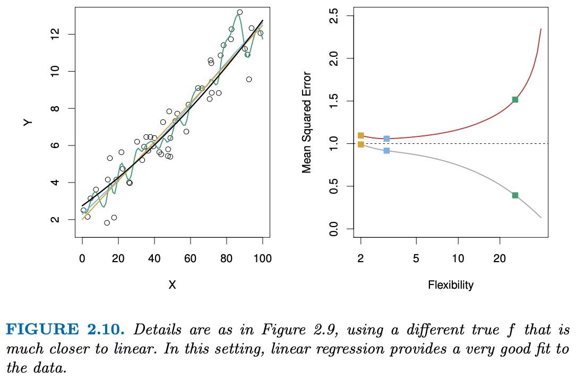
Finally, here is another example in which \(f\) is highly non-linear. Now there is a rapid decrease in both curves before the test MSE starts to increase slowly.
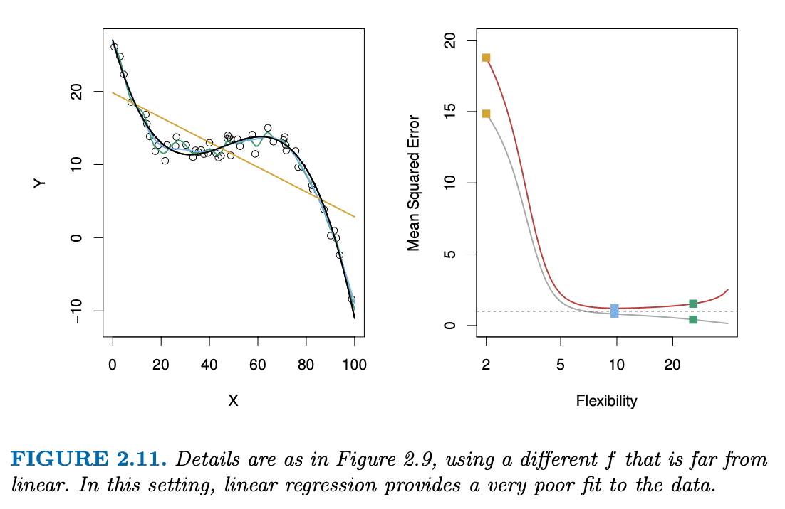
In practice, one can usually compute the training MSE with relative ease, but estimating test MSE is considerably more difficult because usually no test data are available. As the previous three examples illustrate, the flexibility level corresponding to the model with the minimal test MSE can vary considerably among data sets. Throughout this book, we discuss a variety of approaches that can be used in practice to estimate this minimum point. One important method is cross-validation, which is a method for estimating test MSE using the training data.
The bias-variance trade-off
The U-shape observed in the test MSE curves turns out to be the result of two competing properties of statistical learning methods. It is possible to show that the expected test MSE, for a given value \(x_0\), can always be decomposed into the sum of three fundamental quantities: the variance of \(\hat{f}(x_0)\), the squared bias of \(f(x_0)\) and the variance of the error terms \(\epsilon\). That is,
Here, the notation \(E\big(y_o - \hat{f}(x_0)\big)^2\) defines the expected test MSE at \(x_0\), and refers to the average test MSE that we would obtain if we repeatedly estimated \(f\) using a large number of training sets, and tested each at \(x_0\). The overall expected test MSE can be computed by averaging \(E\big(y_o - \hat{f}(x_0)\big)^2\) over all possible values of \(x_0\) in the test set.
This equation tells us that in order to minimize the expected test error, we need to select a statistical learning method that simultaneously achieves low variance and low bias. Note that variance is inherently a nonnegative quantity, and squared bias is also nonnegative. Hence, we see that the expected test MSE can never lie below \(\text{Var}(\epsilon)\), the irreducible error.
What do we mean by the variance and bias of a statistical learning method? Variance refers to the amount by which \(\hat{f}\) would change if we estimated it using a different training data set. Since the training data are used to fit the statistical learning method, different training data sets will result in a different \(\hat{f}\). But ideally the estimate for f should not vary too much between training sets. However, if a method has high variance then small changes in the training data can result in large changes in \(\hat{f}\). In general, more flexible statistical methods have higher variance.
On the other hand, bias refers to the error that is introduced by approximating a real-life problem, which may be extremely complicated, by a much simpler model. Generally, more flexible methods result in less bias.
As a general rule, as we use more flexible methods, the variance will increase and the bias will decrease. The relative rate of change of these two quantities determines whether the test MSE increases or decreases. As we increase the flexibility of a class of methods, the bias tends to initially decrease faster than the variance increases. Consequently, the expected test MSE declines. However, at some point increasing flexibility has little impact on the bias but starts to significantly increase the variance. When this happens the test MSE increases. For the previous examples, here are the variance, bias curves:
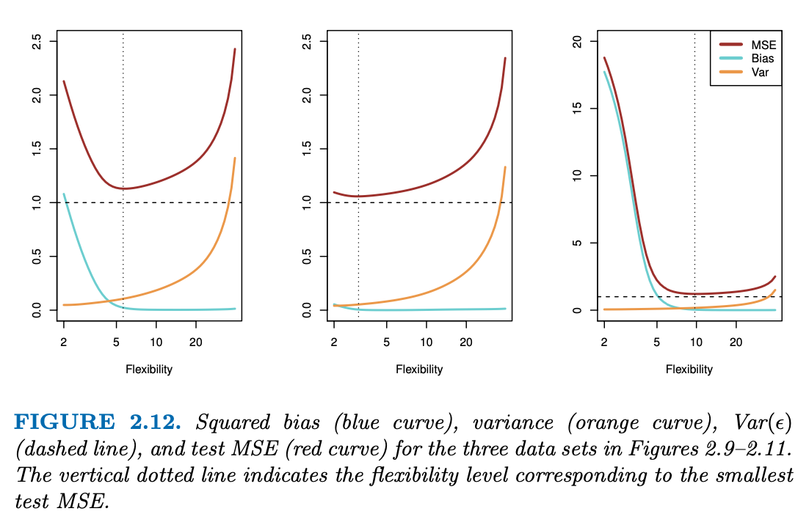
This shows that variance is an increasing function of flexibility, and bias is a decreasing function. The goal is to find the balance point. This trade-off is one of the most important recurring themes in this book.
In a real-life situation in which \(f\) is unobserved, it is generally not possible to explicitly compute the test MSE, bias, or variance for a statistical learning method. Nevertheless, one should always keep the bias-variance trade-off in mind. In this book we explore methods that are extremely flexible and hence can essentially eliminate bias. However, this does not guarantee that they will outperform a much simpler method such as linear regression. To take an extreme example, suppose that the true \(f\) is linear. In this situation linear regression will have no bias, making it very hard for a more flexible method to compete. In contrast, if the true \(f\) is highly non-linear and we have an ample number of training observations, then we may do better using a highly flexible approach. Later, we discuss cross-validation, which is a way to estimate the test MSE using the training data.
The classification setting
Thus far, our discussion of model accuracy has been focused on the regression setting. But many of the concepts that we have encountered, such as the bias-variance trade-off, transfer over to the classification setting with only some modifications due to the fact that \(y_i\) is no longer quantitative. Suppose that we seek to estimate \(f\) on the basis of training observations \(\{(x_1,y_1), \ldots, (x_n,y_n)\}\), where now \(y_1, \ldots , y_n\) are qualitative. The most common approach for quantifying the accuracy of our estimate \(\hat{f}\) is the training error rate, the proportion of mistakes that are made if we apply our estimate \(\hat{f}\) to the training observations:
Here \(\hat{y}_i\) is the predicted class label for the \(i\)th observation using \(\hat{f}\). And \(I(y_i \ne \hat{y}_i))\) is an indicator variable that equals 1 if \(y_i \ne \hat{y}_i\) and zero if \(y_i = \hat{y}_i\) (i.e. indicator if wrong). Thus, the above equation computes the fraction of incorrect classifications.
The test error rate associated with a set of test observations of the form \((x_0, y_0)\) is given by
\[
\text{Ave}(I(y_0 \ne \hat{y}_0))
\]
A good classifier is one for which the test error is smallest.
The Bayes classifier
It is possible to show (though the proof is outside of the scope of this book) that the test error rate given in is minimized, on average, by a very simple classifier that assigns each observation to the most likely class, given its predictor values. In other words, we should simply assign a test observation with predictor vector \(x_0\) to the class \(j\) for which
\[
\text{Pr}(Y = j \mid X = x_0)
\]
is the largest. Note that the above formula is a conditional probability: it is the probability that \(Y = j\), given the observed predictor vector \(x_0\). This very simple classifier is called the Bayes classifier. In a two-class problem where there are only two possible response values, say class 1 or class 2, the Bayes classifier corresponds to predicting class one if \(\text{Pr}(Y = j \mid X = x_0) > 0.5\), and class two otherwise.
Here is an example:
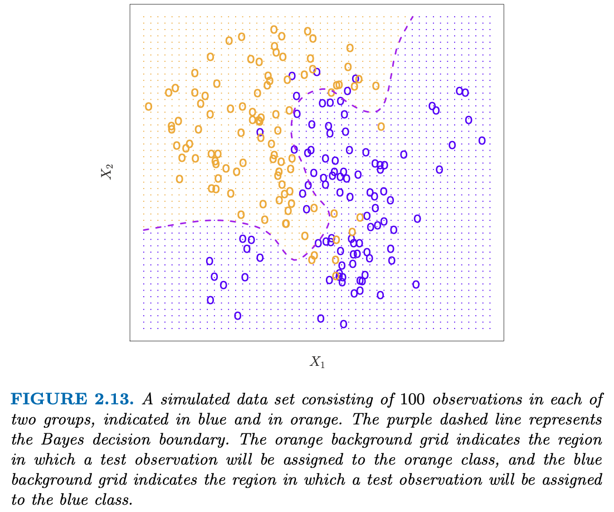
For each value of \(X_1\) and \(X_2\), there is a different probability of the response being orange or blue. Since this is simulated data, we know how the data were generated and we can calculate the conditional probabilities for each value of \(X_1\) and \(X_2\). The purple dashed line represents the points where the probability is exactly 50%. This is called the Bayes decision boundary.
The Bayes classifier produces the lowest possible test error rate, called the Bayes error rate. Since the Bayes classifier will always choose the class for which the above formula is largest, the error rate will be \(1 − \text{max}_j \, \text{Pr}(Y = j \mid X = x_0)\) at \(X = x_0\). In general, the overall Bayes error rate is given by
where the expectation averages the probability over all possible values of \(X\). The Bayes error rate is analogous to the irreducible error, discussed earlier.
\(K\)-Nearest neighbors
In theory we would always like to predict qualitative responses using the Bayes classifier. But for real data, we do not know the conditional distribution of \(Y\) given \(X\), and so computing the Bayes classifier is impossible. Therefore, the Bayes classifier serves as an unattainable gold standard against which to compare other methods.
Many approaches attempt to estimate the conditional distribution of \(Y\) given \(X\), and then classify a given observation to the class with highest estimated probability. One such method is the K-nearest neighbors (KNN) classifier. Given a positive integer \(K\) and a test observation \(x_0\), the KNN classifier first identifies the \(K\) points in the training data that are closest to \(x_0\), represented by \(\cal{N}_0\). It then estimates the conditional probability for class \(j\) as the fraction of points in \(\cal{N}_0\) whose response values equal \(j\):
Finally, KNN classifies the test observation \(x_0\) to the class with the largest probability from the equation above.
Here is an example of the KNN approach:
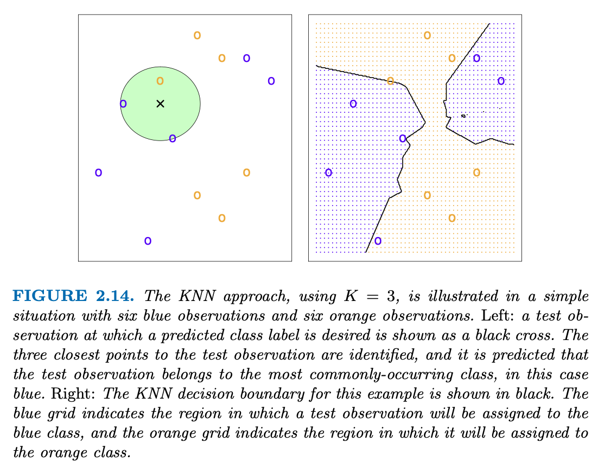
Despite the fact that it is a very simple approach, KNN can often produce classifiers that are surprisingly close to the optimal Bayes classifier. Note that even though the true distribution is not known by the KNN classifier, the KNN decision boundary is very close to that of the Bayes classifier.
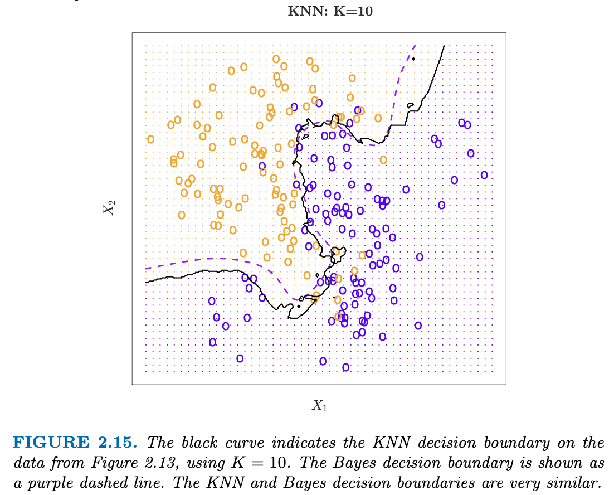
However, the choice of \(K\) has a drastic effect on the KNN classifier obtained.
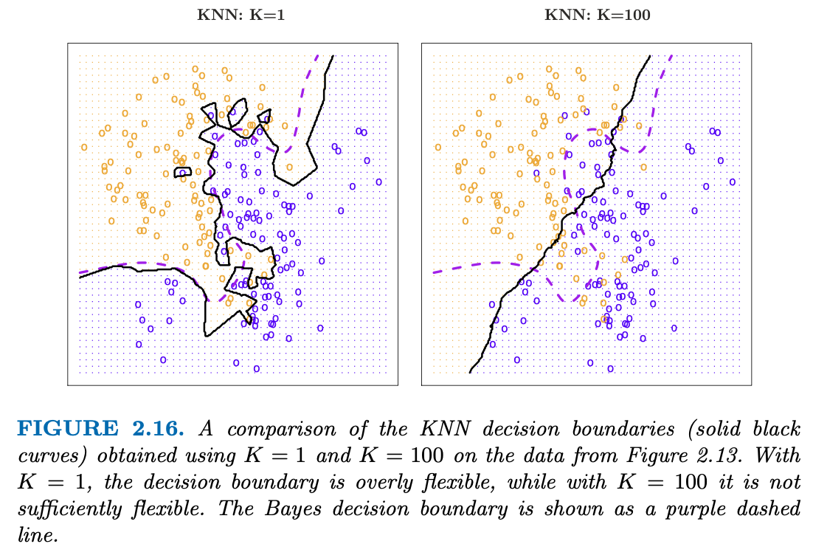
When \(K = 1\), the decision boundary is overly flexible and finds patterns in the data that don’t correspond to the Bayes decision boundary. This corresponds to a classifier that has low bias but very high variance. As \(K\) grows, the method becomes less flexible and produces a decision boundary that is close to linear. This corresponds to a low-variance but high-bias classifier.
Just as in the regression setting, there is not a strong relationship between the training error rate and the test error rate. With \(K = 1\), the KNN training error rate is 0, but the test error rate may be quite high. In general, as we use more flexible classification methods, the training error rate will decline but the test error rate may not.
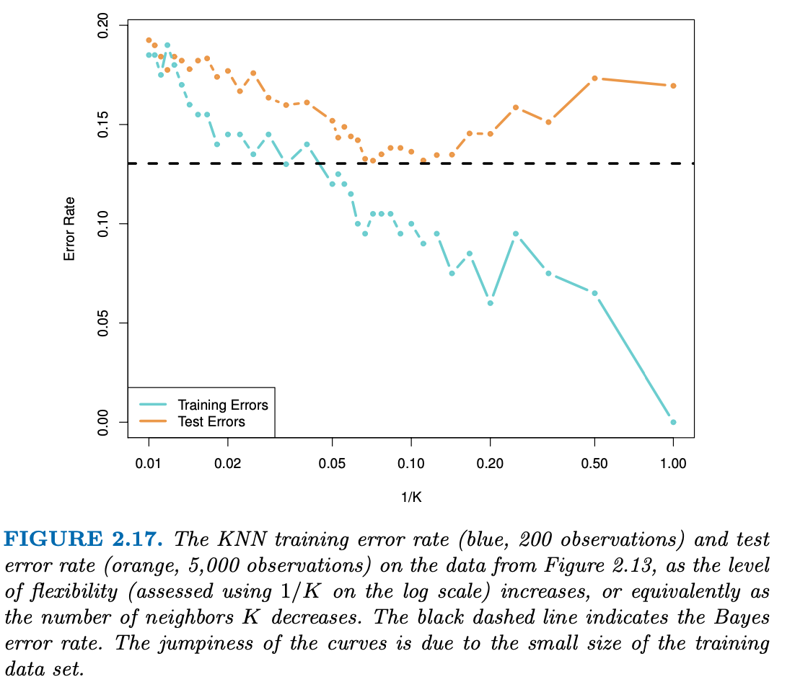
As \(1/K\) increases, the method becomes more flexible. As in the regression setting, the training error rate consistently declines as the flexibility increases. However, the test error exhibits a characteristic U-shape, declining at first (with a minimum at approximately \(K = 10\)) before increasing again when the method becomes excessively flexible and overfits.
In both the regression and classification settings, choosing the correct level of flexibility is critical to the success of any statistical learning method. The bias-variance trade-off, and the resulting U-shape in the test error, can make this a difficult task.
3.2 Lab
< just basic R commands >
3.3 Exercises
3.3.1 Conceptual
Question 1
For each of parts (a) through (d), indicate whether we would generally expect the performance of a flexible statistical learning method to be better or worse than an inflexible method. Justify your answer.
The sample size \(n\) is extremely large, and the number of predictors \(p\) is small.
A flexible model will perform better than an inflexible model because there are ample degrees of freedom to estimate many parameters and still have many leftover for error df.
The number of predictors \(p\) is extremely large, and the number of observations \(n\) is small.
An inflexible will be better because there is a high chance of some predictors being randomly associated.
The relationship between the predictors and response is highly non-linear.
A flexible model will perform better because it can pick up on the non-linear trends better.
The variance of the error terms, i.e. \(\sigma^2 = \text{Var}(\epsilon)\), is extremely high.
Inflexible model will be better because the flexible model will pick up on the noise a lot better even though it is not related to the relationship to the \(X\)s.
Question 2
Explain whether each scenario is a classification or regression problem, and indicate whether we are most interested in inference or prediction. Finally, provide \(n\) and \(p\).
We collect a set of data on the top 500 firms in the US. For each firm we record profit, number of employees, industry and the CEO salary. We are interested in understanding which factors affect CEO salary.
Regression; inference; \(n = 500, p = 3\)
We are considering launching a new product and wish to know whether it will be a success or a failure. We collect data on 20 similar products that were previously launched. For each product we have recorded whether it was a success or failure, price charged for the product, marketing budget, competition price, and ten other variables.
Classification; prediction; \(n = 20, p = 13\)
We are interested in predicting the % change in the USD/Euro exchange rate in relation to the weekly changes in the world stock markets. Hence we collect weekly data for all of 2012. For each week we record the % change in the USD/Euro, the % change in the US market, the % change in the British market, and the % change in the German market.
Regression; prediction; \(n = 52, p = 3\).
Question 3
We now revisit the bias-variance decomposition.
Provide a sketch of typical (squared) bias, variance, training error, test error, and Bayes (or irreducible) error curves, on a single plot, as we go from less flexible statistical learning methods towards more flexible approaches. The x-axis should represent the amount of flexibility in the method, and the y-axis should represent the values for each curve. There should be five curves. Make sure to label each one.
< !!! get from ipad >
Explain why each of the five curves has the shape displayed in part (a).
Bias: Decreases until leveling off as flexibility increases (nears zero)
Variance: Increases faster as flexibility increases
Bayes (irreducible error): Constant, unrelated to flexibility (\(X\))
Training error rate: Decrease monotonically as flexibility increases
Testing error rate: U-shaped with minimum where bias and variance are simultaneously minimized
Question 4
You will now think of some real-life applications for statistical learning.
Describe three real-life applications in which classification might be useful. Describe the response, as well as the predictors. Is the goal of each application inference or prediction? Explain your answer.
Insurance, predict whether a policyholder will have a claim or not. Response is binary, predictors are variables such as credit score, age of business, type of business, etc. Goal is prediction, want to see if a new customer is likely to have a claim.
< good enough >
Describe three real-life applications in which regression might be useful. Describe the response, as well as the predictors. Is the goal of each application inference or prediction? Explain your answer.
Insurance, predict the amount of a claim. Response is claim size in dollars, same predictors as in a.
Describe three real-life applications in which cluster analysis might be useful.
Insurance, determining if a business is low, medium or high risk. Same predictors as a.
Question 5
What are the advantages and disadvantages of a very flexible (versus a less flexible) approach for regression or classification? Under what circumstances might a more flexible approach be preferred to a less flexible approach? When might a less flexible approach be preferred?
Flexible models can pick up on non-linear patterns in regression and are more useful in prediction when we are only concerned with accuracy, especially with large \(n\); and they are less biased, however more variable. A less flexible approach is better for inference when we want to understand the relationship(s) between \(Y\) and \(X\); more bias, but less variable.
Question 6
Describe the differences between a parametric and a non-parametric statistical learning approach. What are the advantages of a parametric approach to regression or classification (as opposed to a non-parametric approach)? What are its disadvantages?
Parametric approach assumes a functional form of the response and one needs to only estimate parameters, which is a simpler task. And because of the assumption, the model is more interpretable. However a non-parametric method just fits the data as best as possible. Non-parametric methods can be less biased, but are more variable, especially as the complexity increases and more data is needed because of the more parameters being estimated.
Question 7
The table below provides a training data set containing six observations, three predictors, and one qualitative response variable.
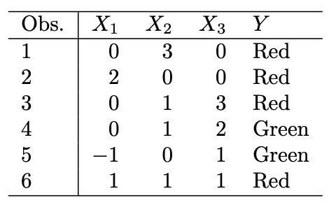
Suppose we wish to use this data set to make a prediction for \(Y\) when \(X_1 = X_2 = X_3 = 0\) using \(K\)-nearest neighbors.
Compute the Euclidean distance between each observation and the test point, \(X_1 = X_2 = X_3 = 0\).
# read in datadf<-tibble( x1 =c(0, 2, 0, 0, -1, 1), x2 =c(3, 0, 1, 1, 0, 1), x3 =c(0, 0, 3, 2, 1, 1), y =c("Red", "Red", "Red", "Green", "Green", "Red"))# define function to calculate euclidean distance # -> sum function calculates the sum of the squares of absolute difference between corresponding elements of vec_1 and vec_2 calc_euc_dist<-function(vec_1, vec_2){subtract(vec_1, vec_2)%>%raise_to_power(2)%>%sum%>%sqrt}# calculate euclidean distance for each observationdf%>%rowwise()%>%mutate(euc_dist =calc_euc_dist(c(x1, x2, x3), rep(0, 3)), .keep ="none")
# A tibble: 1 × 2
y euc_dist
<chr> <dbl>
1 Green 1.41
Green is our prediction
What is our prediction with K = 3? Why?
# turn above into a function# define function to do KNN prediction for a particular test pointalgorithm_knn<-function(df, y, x0, k=1, final_result=FALSE){# get column namesnms=df%>%colnames# standardized column names# -> place response variable first and renamed# -> followed by explanatory variables renamed x1, x2, ... (unnecessary)df_z<-df%>%select(y =any_of(y), any_of(nms[which(nms!=y)]))#%>% #rename_with(~ paste0("x", 1:(ncol(df)-1)), .cols = any_of(nms[which(nms != y)]))# calculate euclidean distanceseuc_dist=c()for(iin1:nrow(df_z)){euc_dist[i]=calc_euc_dist(as.vector(df_z[i, 2:ncol(df_z)], mode ="double"), x0)}# create dataframe of resultsdf_dist=df_z%>%select(y)%>%bind_cols(euc_dist =euc_dist)# display resultsresults=df_dist%>%slice_min(order_by =euc_dist, n =k)%>%summarize(.by =y, est_prob =n()/nrow(.))# conditionally simplify resultsif(final_result){results%<>%slice_min(order_by =est_prob)%>%select(y)%>%as.character}return(results)}# test function on K = 1algorithm_knn(df, y ="y", x0 =rep(0, 3), k =1, final_result =FALSE)
# A tibble: 1 × 2
y est_prob
<chr> <dbl>
1 Green 1
# now for K = 3algorithm_knn(df, y ="y", x0 =rep(0, 3), k =3, final_result =FALSE)
# A tibble: 2 × 2
y est_prob
<chr> <dbl>
1 Green 0.333
2 Red 0.667
algorithm_knn(df, y ="y", x0 =rep(0, 3), k =3, final_result =TRUE)
[1] "Green"
# test a set of pointsx0<-tibble( x1 =extraDistr::rdunif(n =5, min =0, max =3), x2 =extraDistr::rdunif(n =5, min =0, max =3), x3 =extraDistr::rdunif(n =5, min =0, max =3))results<-c()for(iin1:nrow(x0)){results[i]=algorithm_knn(df, y ="y", x0 =x0[i,], k =3, final_result =TRUE)}results
[1] "Red" "Green" "Green" "Green" "Red"
# note if results include a vector of two classes, then there was a tie. Not sure how to break ties, but could research and code something...
If the Bayes decision boundary in this problem is highly non- linear, then would we expect the best value for K to be large or small? Why?
Small so that the model is more flexible (high \(k\) leads to linear boundaries due to averaging).
# find mean and st dev of each quantitative predictor# -> then format nicelydata_auto%>%select(where(is.numeric))%>%summarize(across(1:ncol(.), list(mean =mean, sd =sd)))%>%pivot_longer(everything(), names_to ="var", values_to ="val")%>%separate_wider_delim(cols =var, delim ="_", names =c("var", "fun"))%>%pivot_wider(names_from ="fun", values_from ="val")
# EDA# -> trying to predict mpgdata_auto%>%select(where(is.numeric))%>%pairs
# useful variables# -> all predictors appear to be correlated with the response (some have non-linear relationship), however there are several that are highly correlated among themselves
# Statistical learning```{r}#| label: load-prereqs#| echo: false#| message: false# knitr optionssource("_common.R")```## Notes### What is statistical learning?Suppose that we observe a quantitative response $Y$ and $p$ different predictors, $X_1, X_2, \ldots , X_p$. We assume that there is some relationship between $Y$ and $X = (X_1, X_2, \ldots, Xp)$, which can be written in the very general form$$Y = f(X) + \epsilon$$Here $f$ is some fixed but unknown function of $X_1, \ldots , X_p$, and $\epsilon$ is a random error term, which is independent of $X$ and has mean zero. In this formulation, $f$ represents the systematic information that $X$ provides about $Y$.**In essence, statistical learning refers to a set of approaches for estimating $f$.**#### Why estimate $f$?There are two main reasons that we may wish to estimate $f$: *prediction*and *inference*.**Prediction**In many situations, a set of inputs $X$ are readily available, but the output $Y$ cannot be easily obtained. In this setting, since the error term averages to zero, we can predict $Y$ using$$\hat{Y} = \hat{f}(X),$$where $\hat{f}$ represents our estimate for $f$ , and $\hat{Y}$ represents the resulting prediction for $Y$. In this setting, $\hat{f}$ is often treated as a *black box*, in the sense that one is not typically concerned with the exact form of $\hat{f}$, provided thatit yields accurate predictions for $Y$.The accuracy of $\hat{Y}$ as a prediction for $Y$ depends on two quantities, which we will call the *reducible error* and the *irreducible error*. In general, $\hat{f}$ will not be a perfect estimate for $f$, and this inaccuracy will introduce some error. This error is *reducible* because we can potentially improve the accuracy of $\hat{f}$ by using the most appropriate statistical learning technique to estimate $f$. However, even if it were possible to form a perfect estimate for $f$, so that our estimated response took the form $\hat{Y} = f(X)$, our prediction would still have some error in it! This is because $Y$ is also a function of $\epsilon$, which, by definition, cannot be predicted using $X$. Therefore, variability associated with $\epsilon$ also affects the accuracy of our predictions. This is known as the *irreducible error*, because no matter how well we estimate $f$, we cannot reduce the error introduced by $\epsilon$.Why is the irreducible error larger than zero? The quantity $\epsilon$ may contain unmeasured variables that are useful in predicting $Y$: since we don’t measure them, $f$ cannot use them for its prediction. The quantity $\epsilon$ may also contain unmeasurable variation.Consider a given estimate $\hat{f}$ and a set of predictors $X$, which yields theprediction $\hat{Y} = \hat{f}(X)$. Assume for a moment that both $\hat{f}$ and $X$ are fixed, so that the only variability comes from $\epsilon$. Then, we can say:{width="50%"}where $E(Y − \hat{Y})^2$ represents the average, or *expected value*, of the squared difference between the predicted and actual value of $Y$, and $Var(\epsilon)$ represents the variance associated with the error term $\epsilon$.The focus of this book is on techniques for estimating $f$ with the aim of minimizing the reducible error. It is important to keep in mind that the irreducible error will always provide an upper bound on the accuracy of our prediction for $Y$. This bound is almost always unknown in practice.**Inference**We are often interested in understanding the association between $Y$ and $X_1, \ldots , X_p$. In this situation we wish to estimate $f$, but our goal is not necessarily to make predictions for $Y$. Now $\hat{f}$ cannot be treated as a black box, because we need to know its exact form. In this setting, one may be interested in answering the following questions:- *Which predictors are associated with the response?* It is often the case that only a small fraction of the available predictors are substantially associated with $Y$. Identifying the few important predictors among a large set of possible variables can be extremely useful, depending on the application.- *What is the relationship between the response and each predictor?* Some predictors may have a positive relationship with $Y$, in the sense that larger values of the predictor are associated with larger values of $Y$. Other predictors may have the opposite relationship. Depending on the complexity of $f$, the relationship between the response and a given predictor may also depend on the values of the other predictors.- *Can the relationship between $Y$ and each predictor be adequately summarized using a linear equation, or is the relationship more complicated?* Historically, most methods for estimating $f$ have taken a linear form. In some situations, such an assumption is reasonable or even desirable. But often the true relationship is more complicated, in which case a linear model may not provide an accurate representation of the relationship between the input and output variables.#### How do we estimate $f$?Throughout this book, we explore many linear and non-linear approaches for estimating $f$. However, these methods generally share certain characteristics. Here is an overview.Note we will always assume that we have observed a set of $n$ different data points, called the *training data* because we will use these observations to train, or teach, our method how to estimate $f$.Our goal is to apply a statistical learning method to the training data in order to estimate the unknown function $f$. In other words, we want to find a function $\hat{f}$ such that $Y \approx \hat{f}(X)$ for any observation $(X,Y)$. Broadly speaking, most statistical learning methods for this task can be characterized as either *parametric* or *non-parametric*. We now briefly discuss these two types of approaches.**Parametric**Parametric methods involve a two-step model-based approach.Step 1- First, we make an assumption about the functional form, or shape, of $f$. For example, one very simple assumption is that $f$ is linear in $X$:$$f(X) = \beta_0 + \beta_1 X_1 + \ldots + \beta_p X_p$$- This is a *linear model*. Once we have assumed that $f$ is linear, the problem of estimating $f$ is greatly simplified. Instead of having to estimate an entirely arbitrary $p$-dimensional function $f(X)$, one only needs to estimate the p+1 coefficients $\beta_0, \beta_1, \ldots, \beta_p$.Step 2- After a model has been selected, we need a procedure that uses the training data to fit or train the model. In the case of the linear model, we need to estimate the parameters $\beta_0, \beta_1, \ldots, \beta_p$.That is,we want to find values of these parameters such that$$Y \approx \beta_0 + \beta_1 X_1 + \ldots + \beta_p X_p$$- The most common approach to fitting the model above is referred to as *(ordinary) least squares*. However, least squares is one of many possible ways to fit the linear model.The model-based approach just described is referred to as *parametric*; **it reduces the problem of estimating $f$ down to one of estimating a set of parameters**. Assuming a parametric form for $f$ simplifies the problem of estimating $f$ because it is generally much easier to estimate a set of parameters, such as $\beta_0, \beta_1, \ldots, \beta_p$ in the linear model, than it is to fit an entirely arbitrary function $f$. The potential disadvantage of a parametric approach is that the model we choose will usually not match the true unknown form of $f$. If the chosen model is too far from the true $f$, then our estimate will be poor. We can try to address this problem by choosing flexible models that can fit many different possible functional forms for $f$. But in general, fitting a more flexible model requires estimating a greater number of parameters. These more complex models can lead to a phenomenon known as *overfitting* the data, which essentially means they follow the errors, or noise, too closely.**Non-parametric****Non-parametric methods do not make explicit assumptions about the functional form of $f$**. Instead they seek an estimate of $f$ that gets as close to the data points as possible without being too rough or wiggly. Such approaches can have a major advantage over parametric approaches: by avoiding the assumption of a particular functional form for $f$, they have the potential to accurately fit a wider range of possible shapes for $f$.Any parametric approach brings with it the possibility that the functional form used to estimate $f$ is very different from the true $f$, in which case the resulting model will not fit the data well. In contrast, non-parametric approaches completely avoid this danger, since essentially no assumption about the form of $f$ is made. But non-parametric approaches do suffer from a major disadvantage: since they do not reduce the problem of estimating $f$ to a small number of parameters, a very large number of observations (far more than is typically needed for a parametric approach) is required in order to obtain an accurate estimate for $f$.Be careful of overfitting though, non-parametric methods can fit the data perfectly if complex enough, which causes the fit obtained to not yield accurate estimates of the response on new observations that were not part of the original training data set.{width="50%"}#### The trade-off between prediction accuracy and model interpretabilityOf the many methods that we examine in this book, some are less flexible, or more restrictive, in the sense that they can produce just a relatively small range of shapes to estimate $f$. For example, linear regression is a relatively inflexible approach, because it can only generate linear functions (smooth lines / planes). Other methods are considerably more flexible because they can generate a much wider range of possible shapes to estimate $f$.One might reasonably ask the following question: *why would we ever choose to use a more restrictive method instead of a very flexible approach?* There are several reasons that we might prefer a more restrictive model. If we are mainly interested in inference, then restrictive models are much more interpretable. For instance, when inference is the goal, the linear model may be a good choice since it will be quite easy to understand the relationship between $Y$ and $X_1, X_2, \ldots, X_p$. In contrast, very flexible approaches, such as the splines and boosting methods can lead to such complicated estimates of $f$ that it is difficult to understand how any individual predictor is associated with the response.Here is an illustration of the trade-off between flexibility and interpretability for some of the methods that we cover in this book.{width="50%"}Least squares linear regression is relatively inflexible but is quite interpretable. The *lasso* relies upon the linear model but uses an alternative fitting procedure for estimating the coefficients $\beta_0, \beta_1, \ldots, \beta_p$. The new procedure is more restrictive in estimating the coefficients, and sets a number of them to exactly zero. Hence in this sense the lasso is a less flexible approach than linear regression. It is also more interpretable than linear regression, because in the final model the response variable will only be related to a small subset of the predictors — namely, those with nonzero coefficient estimates.*Generalized additive models* (GAMs), discussed in Chapter 7, instead extend the linear model to allow for certain non-linear relationships. Consequently, GAMs are more flexible than linear regression. They are also somewhat less interpretable than linear regression, because the relationship between each predictor and the response is now modeled using a curve. Finally, fully non-linear methods such as *bagging*, *boosting*, *support vector machines* with non-linear kernels, and *neural networks* (deep learning) are highly flexible approaches that are harder to interpret.We have established that when inference is the goal, there are clear advantages to using simple and relatively inflexible statistical learning methods. In some settings, however, we are only interested in prediction, and the interpretability of the predictive model is simply not of interest; our sole requirement for the algorithm is that it predict accurately (i.e. interpretability is not a concern). In this setting, we might expect that it will be best to use the most flexible model available. Surprisingly, this is not always the case! We will often obtain more accurate predictions using a less flexible method. This phenomenon, which may seem counterintuitive at first glance, has to do with the potential for overfitting in highly flexible methods.#### Supervised vs unsupervised learningMost statistical learning problems fall in to one of two categories: *supervised* or *unsupervised*. The examples that we have discussed so far in this chapter all fall into the supervised learning domain. For each observation of the predictor measurement(s) $x_i, i = 1, \ldots , n$ there is an associated response measurement $y_i$. We wish to fit a model that relates the response to the predictors, with the aim of accurately predicting the response for future observations (prediction) or better understanding the relationship between the response and the predictors (inference). Many classical statistical learning methods such as linear regression and logistic regression, as well as more modern approaches such as GAM, boosting, and support vector machines, operate in the supervised learning domain. The vast majority of this book is devoted to this setting.By contrast, unsupervised learning describes the somewhat more challenging situation in which for every observation $i = 1, \ldots, n$, we observe a vector of measurements $x_i$ but no associated response $y_i$. It is not possible to fit a linear regression model, since there is no response variable to predict. In this setting, we are in some sense working blind; the situation is referred to as *unsupervised* because we lack a response variable that can supervise our analysis. What sort of statistical analysis is possible? We can seek to understand the relationships between the variables or between the observations. One statistical learning tool that we may use in this setting is *cluster analysis*, or clustering. The goal of cluster analysis is to ascertain, on the basis of $x_1, \ldots, x_n$, whether the observations fall into relatively distinct groups.{width="50%"}However, in practice the group memberships are unknown, and the goal is to determine the group to which each observation belongs. A clustering method could not be expected to assign all of the overlapping points to their correct group.In the example above, there are only two variables, and so one can simply visually inspect the scatterplots of the observations in order to identify clusters. However, in practice, we often encounter data sets that contain many more than two variables. In this case, we cannot easily plot the observations. For instance, if there are $p$ variables in our data set, then $p(p − 1)/2$ distinct scatterplots can be made, and visual inspection is simply not a viable way to identify clusters. For this reason, automated clustering methods are important.Many problems fall naturally into the supervised or unsupervised learning paradigms. However, sometimes the question of whether an analysis should be considered supervised or unsupervised is less clear-cut. For instance, suppose that we have a set of $n$ observations. For $m$ of the observations, where $m < n$, we have both predictor measurements and a response measurement. For the remaining $n − m$ observations, we have predictor measurements but no response measurement. Such a scenario can arise if the predictors can be measured relatively cheaply but the corresponding responses are much more expensive to collect. We refer to this setting as a *semi-supervised learning* problem. In this setting, we wish to use a statistical learning method that can incorporate the $m$ observations for which response measurements are available as well as the $n − m$ observations for which they are not. Although this is an interesting topic, it is beyond the scope of this book.#### Regression vs classification problemsWe tend to refer to problems with a quantitative response as *regression* problems, while those involving a qualitative response are often referred to as *classification* problems. However, the distinction is not always that crisp. Least squares linear regression is used with a quantitative response, whereas logistic regression is typically used with a qualitative (two-class, or *binary*) response. Thus, despite its name, logistic regression is a classification method. But since it estimates class probabilities, it can be thought of as a regression method as well. Some statistical methods, such as $K$-nearest neighbors and boosting, can be used in the case of either quantitative or qualitative responses.We tend to select statistical learning methods on the basis of whether the response is quantitative or qualitative; i.e. we might use linear regression when quantitative and logistic regression when qualitative. However, whether the *predictors* are qualitative or quantitative is generally considered less important. Most of the statistical learning methods discussed in this book can be applied regardless of the predictor variable type, provided that any qualitative predictors are properly *coded* before the analysis is performed.### Assessing model accuracyOne of the key aims of this book is to introduce the reader to a wide range of statistical learning methods that extend far beyond the standard linear regression approach. Why is it necessary to introduce so many different statistical learning approaches, rather than just a single *best* method? *There is no free lunch in statistics:* **no one method dominates all others over all possible data sets**. On a particular data set, one specific method may work best, but some other method may work better on a similar but different data set. Hence it is an important task to decide for any given set of data which method produces the best results. Selecting the best approach can be one of the most challenging parts of performing statistical learning in practice.Now, we discuss some of the most important concepts that arise in selecting a statistical learning procedure for a specific data set.#### Measuring the quality of fitIn order to evaluate the performance of a statistical learning method on a given data set, we need some way to measure how well its predictions actually match the observed data. That is, we need to quantify the extent to which the predicted response value for a given observation is close to the true response value for that observation. In the regression setting, the most commonly-used measure is the *mean squared error* (MSE), given by$$MSE = \frac{1}{n} \sum_{i = 1}^n (y_i - \hat{f}(x_i))^2$$The MSE will be small if the predicted responses are very close to the true responses, and will be large if for some of the observations, the predicted and true responses differ substantially.This MSE is computed using the training data that was used to fit the model, and so should more accurately be referred to as the *training MSE*. But in general, we do not really care how well the method works training on the training data. Rather, *we are interested in the accuracy of the predictions that we obtain when we apply our method to previously unseen test data*. To state it more mathematically, suppose that we fit our statistical learn- ing method on our training observations $\{(x_1,y_1), (x_2,y_2), \ldots, (x_n,y_n)\}$, and we obtain the estimate $\hat{f}$. We can then compute $\hat{f}(x_1), \hat{f}(x_2), \ldots , \hat{f}(x_n)$. If these are approximately equal to $y_1, y_2, \ldots, y_n$, then the training MSE is small. However, we are really not interested in whether $\hat{f}(x_i) \approx y_i$; instead, we want to know whether $\hat{f}(x_0)$ is approximately equalto $y_0$, where $(x_0,y_0)$ is a *previously unseen test observation not used to train the statistical learning method*. We want to choose the method that gives the lowest *test MSE*, as opposed to the lowest training MSE. In other words, if we had a large number of test observations, we could compute the average squared prediction error for these test observations $(x_0,y_0)$:$$\text{Ave}(y_0 - \hat{f}(x_0))^2$$We’d like to select the model for which this quantity is as small as possible.How can we go about trying to select a method that minimizes the test MSE? In some settings, we may have a test data set available. We can then simply evaluate the above formula on the test observations, and select the learning method for which the test MSE is smallest. But what if no test observations are available? In that case, one might imagine simply selecting a statistical learning method that minimizes the training MSE. This seems like it might be a sensible approach, since the training MSE and the test MSE appear to be closely related. Unfortunately, there is a fundamental problem with this strategy: there is no guarantee that the method with the lowest training MSE will also have the lowest test MSE. Roughly speaking, the problem is that many statistical methods specifically estimate coefficients so as to minimize the training set MSE. For these methods, the training set MSE can be quite small, but the test MSE is often much larger.The figure below illustrates this concept. In the left-hand panel, we have generated observations from some $f(X)$ with the true $f$ given by the black curve. The orange, blue and green curves illustrate three possible estimates for $f$ obtained using methods with increasing levels of flexibility. {width="50%"}The blue and green curves were produced using *smoothing splines*. It is clear that as the level of flexibility increases, the curves fit the observed data more closely. The green curve is the most flexible and matches the data very well; however, we observe that it fits the true $f$ (shown in black) poorly because it is too wiggly.On the right panel, the grey curve displays the average training MSE as a function of flexibility, or more formally the *degrees of freedom*, for a number of smoothing splines. The degrees of freedom is a quantity that summarizes the flexibility of a curve. A more restricted and hence smoother curve has fewer degrees of freedom than a wiggly curve (i.e. more error dfs; a more restricted and hence smoother curve has fewer degrees of freedom than a wiggly curve). The training MSE declines monotonically as flexibility increases. In this example the true $f$ is non-linear, and so the orange linear fit is not flexible enough to estimate f well. The green curve has the lowest training MSE of all three methods, since it corresponds to the most flexible of the three curves fit in the left-hand panel.In this example, we know the true function $f$, and so we can also compute the test MSE over a very large test set, as a function of flexibility. (Of course, in general $f$ is unknown, so this will not be possible. The horizontal dashed line indicates $\text{Var}(\epsilon)$, the irreducible error, which corresponds to the lowest achievable test MSE among all possible methods. **As the flexibility of the statistical learning method increases, we observe a monotone decrease in the training MSE and a *U-shape* in the test MSE (red line)**. This is a fundamental property of statistical learning that holds regardless of the particular data set at hand and regardless of the statistical method being used. As model flexibility increases, training MSE will decrease, but the test MSE may not. When a given method yields a small training MSE but a large test MSE, we are said to be *overfitting* the data. This happens because our statistical learning procedure is working too hard to find patterns in the training data, and may be picking up some patterns that are just caused by random chance rather than by true properties of the unknown function $f$. When we overfit the training data, the test MSE will be very large because the supposed patterns that the method found in the training data simply don’t exist in the test data. **Note that regardless of whether or not overfitting has occurred, we almost always expect the training MSE to be smaller than the test MSE because most statistical learning methods either directly or indirectly seek to minimize the training MSE. Overfitting refers specifically to the case in which a less flexible model would have yielded a smaller test MSE.**Here is another example that displays the same patterns. However, because the truth is close to linear, the test MSE only decreases slightly before increasing again, so that the orange least squares fit is substantially better than the highly flexible green curve.{width="50%"}Finally, here is another example in which $f$ is highly non-linear. Now there is a rapid decrease in both curves before the test MSE starts to increase slowly.{width="50%"}In practice, one can usually compute the training MSE with relative ease, but estimating test MSE is considerably more difficult because usually no test data are available. As the previous three examples illustrate, the flexibility level corresponding to the model with the minimal test MSE can vary considerably among data sets. Throughout this book, we discuss a variety of approaches that can be used in practice to estimate this minimum point. One important method is *cross-validation*, which is a method for estimating test MSE using the training data.#### The bias-variance trade-offThe U-shape observed in the test MSE curves turns out to be the result of two competing properties of statistical learning methods. It ispossible to show that the expected test MSE, for a given value $x_0$, canalways be decomposed into the sum of three fundamental quantities: the *variance* of $\hat{f}(x_0)$, the squared *bias* of $f(x_0)$ and the variance of the error terms $\epsilon$. That is,$$E\big(y_o - \hat{f}(x_0)\big)^2 = \text{Var}(\hat{f}(x_0)) + [\text{Bias}(\hat{f}(x_0))]^2 + \text{Var}(\epsilon)$$<!-- ??? proof of this -->Here, the notation $E\big(y_o - \hat{f}(x_0)\big)^2$ defines the *expected test MSE* at $x_0$, and refers to the average test MSE that we would obtain if we repeatedly estimated $f$ using a large number of training sets, and tested each at $x_0$. The overall expected test MSE can be computed by averaging $E\big(y_o - \hat{f}(x_0)\big)^2$ over all possible values of $x_0$ in the test set.This equation tells us that in order to minimize the expected test error, we need to select a statistical learning method that simultaneously achieves *low variance* and *low bias*. Note that variance is inherently a nonnegative quantity, and squared bias is also nonnegative. Hence, we see that the expected test MSE can never lie below $\text{Var}(\epsilon)$, the irreducible error.What do we mean by the *variance* and *bias* of a statistical learning method? *Variance* refers to the amount by which $\hat{f}$ would change if we estimated it using a different training data set. Since the training data are used to fit the statistical learning method, different training data sets will result in a different $\hat{f}$. But ideally the estimate for f should not varytoo much between training sets. However, if a method has high variance then small changes in the training data can result in large changes in $\hat{f}$. **In general, more flexible statistical methods have higher variance**.On the other hand, *bias* refers to the error that is introduced by approximating a real-life problem, which may be extremely complicated, by a much simpler model. **Generally, more flexible methods result in less bias.****As a general rule, as we use more flexible methods, the variance will increase and the bias will decrease.** The relative rate of change of these two quantities determines whether the test MSE increases or decreases. As we increase the flexibility of a class of methods, the bias tends to initially decrease faster than the variance increases. Consequently, the expected test MSE declines. However, at some point increasing flexibility has little impact on the bias but starts to significantly increase the variance. When this happens the test MSE increases. For the previous examples, here are the variance, bias curves:{width="50%"}This shows that variance is an increasing function of flexibility, and bias is a decreasing function. The goal is to find the balance point. This trade-off is one of the most important recurring themes in this book.**In a real-life situation in which $f$ is unobserved, it is generally not possible to explicitly compute the test MSE, bias, or variance for a statistical learning method. Nevertheless, one should always keep the bias-variance trade-off in mind.** In this book we explore methods that are extremely flexible and hence can essentially eliminate bias. However, this does not guarantee that they will outperform a much simpler method such as linear regression. To take an extreme example, suppose that the true $f$ is linear. In this situation linear regression will have no bias, making it very hard for a more flexible method to compete. In contrast, if the true $f$ is highly non-linear and we have an ample number of training observations, then we may do better using a highly flexible approach. Later, we discuss cross-validation, which is a way to estimate the test MSE using the training data.#### The classification settingThus far, our discussion of model accuracy has been focused on the regression setting. But many of the concepts that we have encountered, such as the bias-variance trade-off, transfer over to the classification setting with only some modifications due to the fact that $y_i$ is no longer quantitative. Suppose that we seek to estimate $f$ on the basis of training observations $\{(x_1,y_1), \ldots, (x_n,y_n)\}$, where now $y_1, \ldots , y_n$ are qualitative. The most common approach for quantifying the accuracy of our estimate $\hat{f}$ is the *training error rate*, the proportion of mistakes that are made if we apply our estimate $\hat{f}$ to the training observations:$$\frac{1}{n} \sum_{i = 1}^n I(y_i \ne \hat{y}_i)$$Here $\hat{y}_i$ is the predicted class label for the $i$th observation using $\hat{f}$. And$I(y_i \ne \hat{y}_i))$ is an indicator variable that equals 1 if $y_i \ne \hat{y}_i$ and zero if $y_i = \hat{y}_i$ (i.e. indicator if wrong). Thus, the above equation computes the fraction of incorrect classifications.The *test error rate* associated with a set of test observations of the form $(x_0, y_0)$ is given by$$\text{Ave}(I(y_0 \ne \hat{y}_0))$$A good classifier is one for which the test error is smallest.**The Bayes classifier**It is possible to show (though the proof is outside of the scope of this book) that the test error rate given in is minimized, on average, by a very simple classifier that *assigns each observation to the most likely class, given its predictor values*. In other words, we should simply assign a test observation with predictor vector $x_0$ to the class $j$ for which$$\text{Pr}(Y = j \mid X = x_0)$$is the largest. Note that the above formula is a *conditional probability*: it is the probability that $Y = j$, given the observed predictor vector $x_0$. This very simple classifier is called the *Bayes classifier*. In a two-class problem where there are only two possible response values, say class 1 or class 2, the Bayes classifier corresponds to predicting class one if $\text{Pr}(Y = j \mid X = x_0) > 0.5$, and class two otherwise.Here is an example:{width="50%"}For each value of $X_1$ and $X_2$, there is a different probability of the response being orange or blue. Since this is simulated data, we know how the data were generated and we can calculate the conditional probabilities for each value of $X_1$ and $X_2$. The purple dashed line represents the points where the probability is exactly 50%. This is called the *Bayes decision boundary*.The Bayes classifier produces the lowest possible test error rate, called the *Bayes error rate*. Since the Bayes classifier will always choose the class for which the above formula is largest, the error rate will be $1 − \text{max}_j \, \text{Pr}(Y = j \mid X = x_0)$ at $X = x_0$. In general, the overall Bayes error rate is given by$$1 - E\big(\underset{j}{\text{max}} \, \text{Pr}(Y = j \mid X)\big)$$where the expectation averages the probability over all possible values of $X$. **The Bayes error rate is analogous to the irreducible error, discussed earlier.**<!-- ??? how does this work -->**$K$-Nearest neighbors**In theory we would always like to predict qualitative responses using the Bayes classifier. But for real data, we do not know the conditional distribution of $Y$ given $X$, and so computing the Bayes classifier is impossible. Therefore, the Bayes classifier serves as an unattainable gold standard against which to compare other methods.<!-- ??? why impossible -->Many approaches attempt to estimate the conditional distribution of $Y$ given $X$, and then classify a given observation to the class with highest *estimated* probability. One such method is the *K-nearest neighbors* (KNN) classifier. Given a positive integer $K$ and a test observation $x_0$, the KNN classifier first identifies the $K$ points in the training data that are closest to $x_0$, represented by $\cal{N}_0$. It then estimates the conditional probability for class $j$ as the fraction of points in $\cal{N}_0$ whose response values equal $j$:$$\text{Pr}(Y = j \mid X = x_0) = \frac{1}{K}\sum_{i \in \cal{N}_0} I(y_i = j)$$Finally, KNN classifies the test observation $x_0$ to the class with the largest probability from the equation above.Here is an example of the KNN approach:{width="50%"}Despite the fact that it is a very simple approach, KNN can often produce classifiers that are surprisingly close to the optimal Bayes classifier. Note that even though the true distribution is not known by the KNN classifier, the KNN decision boundary is very close to that of the Bayes classifier.{width="50%"}However, the choice of $K$ has a drastic effect on the KNN classifier obtained.{width="50%"}When $K = 1$, the decision boundary is overly flexible and finds patterns in the data that don’t correspond to the Bayes decision boundary. This corresponds to a classifier that has low bias but very high variance. As $K$ grows, the method becomes less flexible and produces a decision boundary that is close to linear. This corresponds to a low-variance but high-bias classifier.Just as in the regression setting, there is not a strong relationship between the training error rate and the test error rate. With $K = 1$, the KNN training error rate is 0, but the test error rate may be quite high. **In general, as we use more flexible classification methods, the training error rate will decline but the test error rate may not.**{width="50%"}As $1/K$ increases, the method becomes more flexible. As in the regression setting, the training error rate consistently declines as the flexibility increases. However, the test error exhibits a characteristic U-shape, declining at first (with a minimum at approximately $K = 10$) before increasing again when the method becomes excessively flexible and overfits.**In both the regression and classification settings, choosing the correct level of flexibility is critical to the success of any statistical learning method. The bias-variance trade-off, and the resulting U-shape in the test error, can make this a difficult task.**## Lab< just basic R commands >## Exercises### Conceptual#### Question 1> For each of parts (a) through (d), indicate whether we would generally expect the performance of a flexible statistical learning method to be better or worse than an inflexible method. Justify your answer.>> a. The sample size $n$ is extremely large, and the number of predictors $p$ is small.A flexible model will perform better than an inflexible model because there are ample degrees of freedom to estimate many parameters and still have many leftover for error df.> b. The number of predictors $p$ is extremely large, and the number of observations $n$ is small.An inflexible will be better because there is a high chance of some predictors being randomly associated.> c. The relationship between the predictors and response is highly non-linear.A flexible model will perform better because it can pick up on the non-linear trends better.> d. The variance of the error terms, i.e. $\sigma^2 = \text{Var}(\epsilon)$, is extremely high.Inflexible model will be better because the flexible model will pick up on the noise a lot better even though it is not related to the relationship to the $X$s.#### Question 2> Explain whether each scenario is a classification or regression problem, and indicate whether we are most interested in inference or prediction. Finally, provide $n$ and $p$.>> a. We collect a set of data on the top 500 firms in the US. For each firm we record profit, number of employees, industry and the CEO salary. We are interested in understanding which factors affect CEO salary.Regression; inference; $n = 500, p = 3$> b. We are considering launching a new product and wish to know whether it will be a success or a failure. We collect data on 20 similar products that were previously launched. For each product we have recorded whether it was a success or failure, price charged for the product, marketing budget, competition price, and ten other variables.Classification; prediction; $n = 20, p = 13$> c. We are interested in predicting the % change in the USD/Euro exchange rate in relation to the weekly changes in the world stock markets. Hence we collect weekly data for all of 2012. For each week we record the % change in the USD/Euro, the % change in the US market, the % change in the British market, and the % change in the German market.Regression; prediction; $n = 52, p = 3$.#### Question 3> We now revisit the bias-variance decomposition.>> a. Provide a sketch of typical (squared) bias, variance, training error, test error, and Bayes (or irreducible) error curves, on a single plot, as we go from less flexible statistical learning methods towards more flexible approaches. The x-axis should represent the amount of flexibility in the method, and the y-axis should represent the values for each curve. There should be five curves. Make sure to label each one.< !!! get from ipad >{width="50%"}> b. Explain why each of the five curves has the shape displayed in part (a).- Bias: Decreases until leveling off as flexibility increases (nears zero)- Variance: Increases faster as flexibility increases- Bayes (irreducible error): Constant, unrelated to flexibility ($X$)- Training error rate: Decrease monotonically as flexibility increases- Testing error rate: U-shaped with minimum where bias and variance are simultaneously minimized#### Question 4> You will now think of some real-life applications for statistical learning.>> a. Describe three real-life applications in which classification might be useful. Describe the response, as well as the predictors. Is the goal of each application inference or prediction? Explain your answer.- Insurance, predict whether a policyholder will have a claim or not. Response is binary, predictors are variables such as credit score, age of business, type of business, etc. Goal is prediction, want to see if a new customer is likely to have a claim.- < good enough >> b. Describe three real-life applications in which regression might be useful. Describe the response, as well as the predictors. Is the goal of each application inference or prediction? Explain your answer.Insurance, predict the amount of a claim. Response is claim size in dollars, same predictors as in a.> c. Describe three real-life applications in which cluster analysis might be useful.Insurance, determining if a business is low, medium or high risk. Same predictors as a.#### Question 5> What are the advantages and disadvantages of a very flexible (versus a less flexible) approach for regression or classification? Under what circumstances might a more flexible approach be preferred to a less flexible approach? When might a less flexible approach be preferred?- Flexible models can pick up on non-linear patterns in regression and are more useful in prediction when we are only concerned with accuracy, especially with large $n$; and they are less biased, however more variable. A less flexible approach is better for inference when we want to understand the relationship(s) between $Y$ and $X$; more bias, but less variable.#### Question 6> Describe the differences between a parametric and a non-parametric statistical learning approach. What are the advantages of a parametric approach to regression or classification (as opposed to a non-parametric approach)? What are its disadvantages?Parametric approach assumes a functional form of the response and one needs to only estimate parameters, which is a simpler task. And because of the assumption, the model is more interpretable. However a non-parametric method just fits the data as best as possible. Non-parametric methods can be less biased, but are more variable, especially as the complexity increases and more data is needed because of the more parameters being estimated.#### Question 7> The table below provides a training data set containing six observations, three predictors, and one qualitative response variable.{width="50%"}> Suppose we wish to use this data set to make a prediction for $Y$ when $X_1 = X_2 = X_3 = 0$ using $K$-nearest neighbors.> a. Compute the Euclidean distance between each observation and the test point, $X_1 = X_2 = X_3 = 0$.```{r}# read in datadf <-tibble(x1 =c(0, 2, 0, 0, -1, 1),x2 =c(3, 0, 1, 1, 0, 1),x3 =c(0, 0, 3, 2, 1, 1),y =c("Red", "Red", "Red", "Green", "Green", "Red"))# define function to calculate euclidean distance # -> sum function calculates the sum of the squares of absolute difference between corresponding elements of vec_1 and vec_2 calc_euc_dist <-function(vec_1, vec_2) {subtract(vec_1, vec_2) %>%raise_to_power(2) %>% sum %>% sqrt} # calculate euclidean distance for each observationdf %>%rowwise() %>%mutate(euc_dist =calc_euc_dist(c(x1, x2, x3), rep(0, 3)),.keep ="none")```> b. What is our prediction with K = 1? Why?```{r}df %>%rowwise() %>%mutate(euc_dist =calc_euc_dist(c(x1, x2, x3), rep(0, 3)),.keep ="unused") %>%ungroup() %>%slice_min(order_by = euc_dist, n =1)```Green is our prediction> c. What is our prediction with K = 3? Why?```{r}# turn above into a function# define function to do KNN prediction for a particular test pointalgorithm_knn <-function(df, y, x0, k =1, final_result =FALSE) {# get column names nms = df %>% colnames# standardized column names# -> place response variable first and renamed# -> followed by explanatory variables renamed x1, x2, ... (unnecessary) df_z <- df %>%select(y =any_of(y), any_of(nms[which(nms != y)])) #%>% #rename_with(~ paste0("x", 1:(ncol(df)-1)), .cols = any_of(nms[which(nms != y)]))# calculate euclidean distances euc_dist =c()for (i in1:nrow(df_z)) { euc_dist[i] =calc_euc_dist(as.vector(df_z[i, 2:ncol(df_z)], mode ="double"), x0) }# create dataframe of results df_dist = df_z %>%select(y) %>%bind_cols(euc_dist = euc_dist)# display results results = df_dist %>%slice_min(order_by = euc_dist, n = k) %>%summarize(.by = y, est_prob =n() /nrow(.))# conditionally simplify resultsif(final_result) { results %<>%slice_min(order_by = est_prob) %>%select(y) %>% as.character }return(results)}# test function on K = 1algorithm_knn(df, y ="y", x0 =rep(0, 3), k =1, final_result =FALSE)# now for K = 3algorithm_knn(df, y ="y", x0 =rep(0, 3), k =3, final_result =FALSE)algorithm_knn(df, y ="y", x0 =rep(0, 3), k =3, final_result =TRUE)# test a set of pointsx0 <-tibble(x1 = extraDistr::rdunif(n =5, min =0, max =3),x2 = extraDistr::rdunif(n =5, min =0, max =3),x3 = extraDistr::rdunif(n =5, min =0, max =3))results <-c()for (i in1:nrow(x0)) { results[i] =algorithm_knn(df, y ="y", x0 = x0[i,], k =3, final_result =TRUE)}results# note if results include a vector of two classes, then there was a tie. Not sure how to break ties, but could research and code something...```> d. If the Bayes decision boundary in this problem is highly non- linear, then would we expect the best value for K to be large or small? Why?Small so that the model is more flexible (high $k$ leads to linear boundaries due to averaging).### Applied#### Question 8```{r}# load datadata_college <- ISLR2::College# summarize numeric variablesdata_college %>%select(where(is.numeric)) %>% summary# scatterplot matrixdata_college[, 1:10] %>% pairs# side-by-side boxplotsboxplot(Outstate ~ Private, data = data_college)# create new variable and summarizedata_college %<>%mutate(Elite =case_when( Top10perc >50~"Yes",.default ="No" ))table(data_college$Elite)```#### Question 9```{r}# load datadata_auto <- ISLR2::Auto # determine variable typesdata_auto %>%map_chr(class)# find range of each quantitative predictordata_auto %>%select(where(is.numeric)) %>%reframe(across(1:ncol(.), range))# find mean and st dev of each quantitative predictor# -> then format nicelydata_auto %>%select(where(is.numeric)) %>%summarize(across(1:ncol(.), list(mean = mean, sd = sd))) %>%pivot_longer(everything(),names_to ="var",values_to ="val") %>%separate_wider_delim(cols = var,delim ="_",names =c("var", "fun")) %>%pivot_wider(names_from ="fun",values_from ="val")# EDA# -> trying to predict mpgdata_auto %>%select(where(is.numeric)) %>% pairs# useful variables# -> all predictors appear to be correlated with the response (some have non-linear relationship), however there are several that are highly correlated among themselves```#### Question 10```{r}# load datadata_boston <- ISLR2::Boston# < ... easy stuff ... > ```